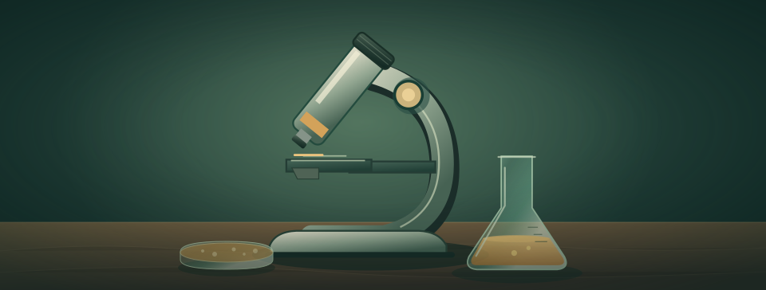

01 / Investigative labs
AP Biology
Run virtual experiments, collect data, and use the results to explain what happened.
Biology Lab Bench / Welcome
Two collections of free interactive biology investigations. Choose the course you teach or the one your teacher assigned.

01 / Investigative labs
Run virtual experiments, collect data, and use the results to explain what happened.

02 / Biology companions
Explore models and evidence tied to the stories in OpenSciEd’s high school biology units.
No online account needed. Your work is saved in the browser where you complete it.